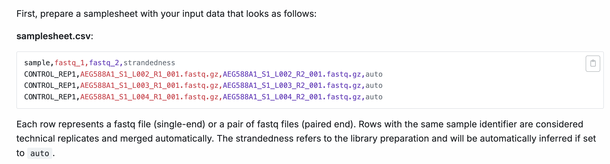
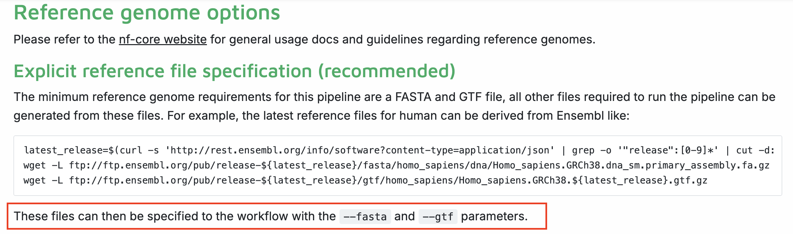

Customising and running nf-core pipelines
- Run an nf-core pipeline
- Specify different parameters to customise the running of an nf-core pipeline
- Examine output files from an nf-core pipeline
- Customise config files for running an nf-core pipeline
2.1.1. Environment setup
Reminder before starting this session, make sure you follow your institute’s HPC rulebook re: how to run a workflow manager.
At Peter Mac HPC, this would mean not running the nextflow pipeline on the login node, load the nextflow & apptainer modules, and set the container cache location (or use the institutional config)
srun --pty -p <PARTITION> --mem 8GB --mincpus 2 -t 0-5:00 bash
module load nextflow/24.10.5
export NXF_APPTAINER_CACHEDIR="/config/binaries/singularity/containers_devel/nextflowBefore we start, please download the test datasets into your home directory
git clone --single-branch --branch rnaseq https://github.com/nf-core/test-datasets ~/rnaseq_dataAnd for the purpose of this workshop, we are going to cache the containers by running a test (with a profile) to save time for our processing later
export NXF_APPTAINER_CACHEDIR="/home/${USER}/apptainer_cache"
nextflow run nf-core/rnaseq -r 3.14.0 -profile test,apptainer --outdir ~/test_rnaseq --max_memory 7.GB --max_cpus 2 Please also create a folder inside our work directory called lesson2.1 and move into it:
mkdir ./lesson2.1 && cd $_2.1.2. Understanding an nf-core pipeline
The following sections of the nf-core documentation can be used to understand what a particular pipeline is doing, to inform your choices about aspects of pipeline-specific customisations. For this section, we will investigate nf-core/rnaseq pipeline.
| Docs | Description | Customisation level |
|---|---|---|
| Introduction | Workflow summary |
|
| Usage | Inputs and options |
|
| Parameters | Available flags |
|
| Output | Files from all processes processes |
|
Pipeline structure
Looking at the nf-core/rnaseq pipeline structure provided in the introduction, we can see that the developers have:
- Organised the workflow into 5 stages based on the type of work that is being done
- Provided a choice of multiple methods and specified defaults
- Provided a choice of tool for some steps

Quiz: Observing the diagram above, which statement is true regarding the choice of alignment and quantification methods provided by the nf-core/rnaseq pipeline?
A. The pipeline uses a fixed method for read alignment and quantification.
B. Users can choose between several different methods for read alignment and quantification.
C. The pipeline always performs read alignment and quantification using STAR or HISAT2.
D. The choice of alignment and quantification method is determined automatically based on the input data.
The correct answer is B. The nf-core/rnaseq pipeline allows users to choose between pseudo-alignment and quantification, or genome-based read alignment and quantification.
- A. is incorrect because the pipeline is not limited to a single method.
- C. is incorrect because while read alignment and quantification using STAR is the default method, users can also choose the pseudo-alignment.
- D. is also incorrect, as the pipeline only accepts FASTQ files as input, and the choice of alignment and quantification method must be specified by the user.
Default pipeline usage
Typically, nf-core pipelines at a minimum require users to specify a sample sheet (--input) detailing the path to your sample data and any relevant metadata. Additionally, if a reference file version is not provided (using the --genome parameter), a default iGenomes one will be used.
You can see the recommended (typical) run command and all the parameters available for the nf-core/rnaseq pipeline by running:
nextflow run nf-core/rnaseq -r 3.14.0 --help The typical or recommended run command for this rnaseq pipeline is provided at the top of the output:

It outlines a requirement for:
--input: An input samplesheet that contains the data to be processed--outdir: A location to store outputs--genome: Relevant reference data-profile: A software management method
Nextflow-specific parameters use one (-) hyphen, whereas pipeline-specific parameters use two (--). In the typical run command above -profile is a Nextflow parameter, while --input is a Nextflow parameter.
2.1.3. Setting up the run command
Most of us will need to adjust the default run command for our experiments. Today we’ll be adjusting the typical nf-core/rnaseq run command by:
- Creating a samplesheet csv, based on the requirements of the pipeline
- Providing our own reference files
- Using the
apptainersoftware management profile - Customising the execution of some processes
- Specifying the computing resource limitations of our session (2 CPUs, 8 GB RAM)
Required parameter: --input
We will create a samplesheet.csv based on the documentation provided by nf-core/rnaseq.

For rnaseq, a sample value that specifies the sample name, path to FASTQ files, and strandedness is required.
Since we are only testing the pipeline in this session, we only need to work with a couple of samples.
sample,fastq_1,fastq_2,strandedness
SRR6357070,../rnaseq_data/testdata/GSE110004/SRR6357070_1.fastq.gz,../rnaseq_data/testdata/GSE110004/SRR6357070_2.fastq.gz,forward
SRR6357071,../rnaseq_data/testdata/GSE110004/SRR6357071_1.fastq.gz,../rnaseq_data/testdata/GSE110004/SRR6357071_2.fastq.gz,forwardRequired parameter: --outdir
Most nf-core pipelines will require user to specified an output directory to dump all the output files to.
For this exercise, we will set our output directory to:
--outdir ./rnaseq_small_test_outdirRequired input: reference data
Many nf-core pipelines have a minimum requirement for reference data inputs. The input reference data requirements for this pipeline are provided in the usage documentation:

In the documentation, we see that the recommended method to provide reference files is to explicitly state them using the --fasta and --gtf parameters. This means we can replace the --genome flag in the typical run command with our own files. To see all available reference file parameters, rerun the pipeline’s help command to view all the available parameters:
nextflow run nf-core/rnaseq -r 3.14.0 --helpFrom the Reference genome options parameters, we will provide our own files using:
--fasta ../rnaseq_data/reference/genome.fasta
--gtf ../rnaseq_data/reference/genes.gtfOptional parameters
Now that we have prepared our input and reference data, we will further customise the typical run command by:
- Using Nextflow’s
-profileparameter to specify theapptainerprofile - Adding additional process-specific flags to skip alignment and only use pseudo-aligner
- Adding additional max resource flags to specify the number of CPUs and amount of memory available to the pipeline.
Using the command line, the following parameters can be set:
--skip_alignment true
--pseudo_aligner salmonInside the nextflow.config, max_memory and max_cpus have been set to the following:
max_memory = '128.GB'
max_cpus = 16Using the command line, this can be changed with:
--max_memory '6.GB'
--max_cpus 22.1.4. Running the pipeline
Putting together all the input & parameters that we specified above, the final command will contain our software profile, input samplesheet, output directory, reference files, custom pipeline steps, and custom resources to use.
nextflow run nf-core/rnaseq -r 3.14.0 \
-profile apptainer \
--input samplesheet.csv \
--outdir ./rnaseq_small_test_outdir \
--fasta ../rnaseq_data/reference/genome.fasta \
--gtf ../rnaseq_data/reference/genes.gtf \
--skip_alignment true \
--pseudo_aligner salmon \
--max_memory '6.GB' \
--max_cpus 2You can see how far we’ve customised the typical run command from the original example of :
nextflow run nf-core/rnaseq --input samplesheet.csv --genome GRCh37 -profile dockerNow that we have prepared our data and chosen which parameters to apply, run the pipeline using the customised command we created above. Take a look at the stdout printed to the screen. Your workflow configuration and parameter customisations are all documented here. You can use this to confirm if your parameters have been correctly passed to the run command:

As the workflow starts, you will also see a number of processes that are created underneath this. Recall that processes are executed independently and can run in parallel. Nextflow manages the data dependencies between processes, ensuring that each process is executed only when its input data is available, and all of its dependencies have been satisfied.
To understand how this is coordinated, consider the STAR_ALIGN process.

Notice a few things:
- We can see which inputs are being processed by looking at the end of the process name
- When a process starts it progressively spawns tasks for all inputs to be processed
- Two
TRIMGALOREprocesses are created, one for each sample in oursamplesheet.csv. This process has to complete beforeSTAR_ALIGNbegins - Once a
TRIMGALOREtask is completed for a sample, theSTAR_ALIGNtask for that sample begins - When the
STAR_ALIGNprocess starts, it spawns 2 tasks, one for each sample in our samplesheet
Exercise
While we can specify parameters to a pipeline using the command line, this can be messy and result in huge nextflow run commands where the parameters we used is not documented. Recall earlier that a -params-file Nextflow parameter can be used to supply parameters to the pipeline.
Your task: Create a a parameter file workshop-params.yaml, that contains our customised pipeline parameters. How can this file then be used in the nextflow run command? (Note: Nextflow parameters can’t be supplied inside a parameter file)
The parameter file workshop-params.yaml should contain the following:
input: "./samplesheet.csv"
outdir: "./rnaseq_small_test_outdir"
fasta: "../rnaseq_data/reference/genome.fasta"
gtf: "../rnaseq_data/reference/genes.gtf"
skip_alignment: true
pseudo_aligner: "salmon"
max_memory: "6.GB"
max_cpus: 2Note that here the full path to our reference files is provided. Since -profile is a Nextflow parameter and not a pipeline parameter, it’s not listed in the parameter file.
To run the pipeline using this parameter file, the following command can be used:
nextflow run nf-core/rnaseq -r 3.14.0 \
-profile apptainer \
-params-file ./workshop-params.yamlExamine the outputs
Once your pipeline has completed, you should see this message printed to your terminal:
-[nf-core/rnaseq] Pipeline completed successfully -
Completed at: 27-May-2025 15:25:54
Duration : 2m 15s
CPU hours : 0.1
Succeeded : 20The pipeline ran successfully.
In the meantime, list (ls -a) the contents of your directory, and you’ll see new directories (and a hidden directories/files) have been created:
. .. .nextflow .nextflow.log .nextflow.log.1 rnaseq_small_test_outdir samplesheet.csv work workshop-params.yamlNextflow has created 2 new output directories, work and rnaseq_small_test_outdir in the current directory.
The
workdirectory:- As each job is ran, a unique sub-directory is created inside the
workdirectory. - These directories house temporary files and various command logs created by a process. This contains all the information required when troubleshooting a failed process.
We will talk in more detail about pipeline troubleshooting later in the next section.
- As each job is ran, a unique sub-directory is created inside the
The
rnaseq_small_test_outdirdirectory- All final outputs will be presented in a directory specified by the
--outdirparameter. - Inside this directory, you should have the output files grouped into common tools:
. .. fastqc multiqc pipeline_info salmon trimgalore- All final outputs will be presented in a directory specified by the
- nf-core pipelines contain default settings and required inputs that can be customised.
- An nf-core pipeline’s Usage, Output, and Parameters documentation can be used to design a suitable run command.
- Parameters can be used to customise the workflow, processes, tools, and compute resources.
Next Chapter: Troubleshooting a nextflow pipeline run
This workshop is adapted from various nextflow training materials, including: